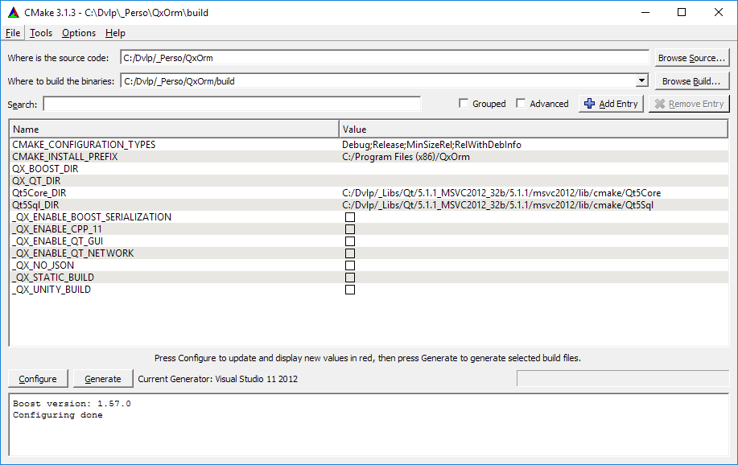
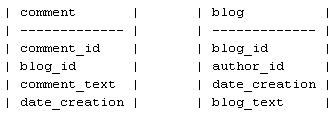
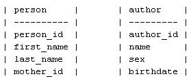
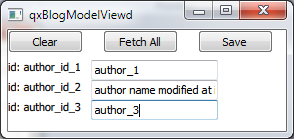
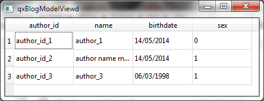

|
|
| Accueil | Téléchargement | Exemple rapide |
Tutoriel (4)
|
Manuel (2)
|
Forum | Nos clients |
| QxOrm >> Manuel d'utilisation de la bibliothèque QxOrm |
|
L'objectif de ce manuel utilisateur est de présenter de manière structurée l'ensemble des fonctionnalités proposées par la bibliothèque QxOrm.
Ce manuel est destiné aux développeurs et architectes logiciel qui souhaitent gérer une couche de données persistante en C++/Qt.
Des compétences techniques en C++ et base de données sont requises pour la bonne compréhension de ce document.
Remarque : la plupart des fonctionnalités présentées dans ce manuel peuvent être définies rapidement et facilement avec l'application QxEntityEditor (l'éditeur graphique de la bibliothèque QxOrm). Une documentation dédiée à l'application QxEntityEditor est également disponible. Autre remarque : ce manuel est basé en grande partie sur l'ancienne FAQ du site QxOrm, toujours accessible en cliquant ici.
QxOrm est une bibliothèque C++ open source de gestion de données (Object Relational Mapping, ORM).
QxOrm est développé par Lionel Marty, Ingénieur en développement logiciel depuis 2003. À partir d'une simple fonction de paramétrage (que l'on peut comparer avec un fichier de mapping XML Hibernate), vous aurez accès aux fonctionnalités suivantes :
La bibliothèque QxOrm a été retenue pour faire partie du programme Qt Ambassador. Si vous trouvez un bug ou si vous avez une question concernant le fonctionnement de la bibliothèque QxOrm, vous pouvez envoyer un mail à : support@qxorm.com. Un forum (en anglais) dédié à QxOrm est disponible en cliquant ici. Vous pouvez également retrouver la communauté française de QxOrm sur le forum de Developpez.com. Aperçu rapide de l'application QxEntityEditor
QxEntityEditor est un éditeur graphique pour la bibliothèque QxOrm : QxEntityEditor permet de gérer graphiquement le modèle d'entités.
QxEntityEditor est multi-plateforme (disponible pour Windows, Linux et Mac OS X) et génère du code natif pour tous les environnements : bureau (Windows, Linux, Mac OS X), embarqué et mobile (Android, iOS, Windows Phone, Raspberry Pi, etc.). Une vidéo de présentation de l'application QxEntityEditor est disponible. QxEntityEditor est basé sur un système de plugins et propose diverses fonctionnalités pour importer/exporter le modèle de données :
QxEntityEditor est développé par Lionel Marty, Ingénieur en développement logiciel depuis 2003. Un manuel utilisateur dédié à l'application QxEntityEditor est disponible. Convention d'écriture C++ utilisée par la bibliothèque QxOrm
La bibliothèque QxOrm utilise les conventions d'écriture de code C++ suivantes :
La bibliothèque QxOrm est multi-plateforme et peut être installée sur tous types d'environnement : Windows, Linux (Unix), Mac OS X, Android, iOS, Windows Phone, etc...
Un tutoriel complet (avec captures d'écran) pour installer un environnement de développement avec QxOrm sous Windows est disponible en cliquant ici. L'objectif de ce chapitre est de présenter rapidement les différentes étapes à suivre pour installer QxOrm sur tous types d'environnement :
Remarque : par défaut, la bibliothèque QxOrm dépend uniquement des modules QtCore et QtSql. Il est possible d'activer des fonctionnalités supplémentaires grâce au fichier de configuration QxOrm.pri (ou QxOrm.cmake) : ces nouvelles fonctionnalités peuvent alors ajouter des dépendances à QxOrm. Dépendance à boost (seuls les fichiers d'en-tête *.hpp sont nécessaires)
Remarque importante : par défaut, la bibliothèque QxOrm dépend uniquement des fichiers d'en-tête *.hpp de boost (utilisation des bibliothèques header only uniquement). L'installation de boost est donc très simple puisqu'il suffit de dézipper le package boost (pour disposer des fichiers d'en-tête *.hpp). Fichier de configuration QxOrm.pri (ou QxOrm.cmake)
Le fichier de configuration QxOrm.pri (ou QxOrm.cmake) est divisé en plusieurs sections (chacune étant commentée) et regroupe les différents paramétrages et options de compilation disponibles.
Il est fortement recommandé de lire attentivement le fichier de configuration QxOrm.pri avant de compiler la bibliothèque QxOrm.
Il est possible de conserver le paramétrage par défaut, seule la variable QX_BOOST_INCLUDE_PATH est nécessaire pour pouvoir compiler la bibliothèque QxOrm : cette variable indique où trouver les fichiers d'en-tête *.hpp de la bibliothèque boost :
Si vous ne souhaitez pas modifier le fichier de configuration QxOrm.pri, il est possible de définir une variable d'environnement nommée BOOST_INCLUDE : cette variable d'environnement sera alors utilisée automatiquement pour valoriser QX_BOOST_INCLUDE_PATH (lire le fichier QxOrm.pri pour plus d'informations). Voici une liste non exhaustive des différentes options de compilation disponibles (lire le fichier de configuration QxOrm.pri pour plus de détails), aucune n'étant activée par défaut :
Remarque : le fichier de configuration QxOrm.pri (ou QxOrm.cmake) devra être inclus dans tous les projets dépendants de la bibliothèque QxOrm en ajoutant la ligne suivante dans le fichier *.pro du projet :
Autre remarque : à la place de qmake, il est possible d'utiliser l'outil de compilation CMake pour configurer et construire la bibliothèque QxOrm. CMake propose un outil graphique afin de visualiser et paramétrer les différentes options disponibles :  Compiler la bibliothèque QxOrm (avec qmake ou CMake)
QxOrm utilise le processus qmake de la bibliothèque Qt pour générer les makefile et compiler le projet (il est également possible d'utiliser l'outil de compilation CMake, un fichier CMakeLists.txt étant fourni avec la bibliothèque QxOrm).
qmake est multi-plateforme et fonctionne parfaitement sous Windows, Linux (Unix) et Mac OS X. Pour compiler QxOrm, il suffit d'exécuter les commandes suivantes :
Sous Windows, des fichiers *.vcproj et *.sln sont disponibles pour les éditeurs Visual C++ 2008, Visual C++ 2010 et Visual C++ 2012. Les fichiers *.pro sont lisibles par l'éditeur Qt Creator, et des plugins existent permettant de s'interfacer avec de nombreux éditeurs C++. Les fichiers mingw_build_all_debug.bat et mingw_build_all_release.bat présents dans le dossier ./tools/ permettent de compiler rapidement QxOrm ainsi que tous les tests avec le compilateur MinGW sous Windows. Les fichiers gcc_build_all_debug.sh et gcc_build_all_release.sh présents dans le dossier ./tools/ permettent de compiler rapidement QxOrm ainsi que tous les tests avec GCC sous Linux. Enfin, les fichiers osx_build_all_debug.sh et osx_build_all_release.sh présents dans le dossier ./tools/ permettent de compiler rapidement QxOrm ainsi que tous les tests sous Mac OS X (merci à Dominique Billet pour l'écriture des scripts). Pilotes SQL fournis par Qt (drivers)
QxOrm utilise le moteur QtSql de Qt basé sur un système de plugin.
Une liste détaillée des bases de données supportées est disponible sur le site de Qt. Le plugin ODBC (QODBC) assure une compatibilité avec de nombreuses bases de données. Pour des performances optimales, il est conseillé d'utiliser un plugin spécifique à une base de données :
Persistance - Object Relational Mapping (ORM)
La bibliothèque QxOrm fournit un moteur de persistance des données basé sur le module QtSql de Qt.
Ce moteur de persistance utilise la technique de programmation : Object Relational Mapping (ORM).
Définition du site Wikipedia : un mapping objet-relationnel (en anglais object-relational mapping ou ORM) est une technique de programmation informatique qui crée l'illusion d'une base de données orientée objet à partir d'une base de données relationnelle en définissant des correspondances entre cette base de données et les objets du langage utilisé. On pourrait le désigner par « correspondance entre monde objet et monde relationnel ». Le mapping objet-relationnel consiste à associer une ou plusieurs classes avec une table, et chaque attribut de la classe avec un champ de la table. Les frameworks de mapping objet-relationnel permettent d'éliminer la duplication de code dans les opérations CRUD. Pour effectuer cette correspondance entre le monde objet et le monde relationnel, ainsi pour que proposer l'ensemble de ses fonctionnalités, la bibliothèque QxOrm impose l'enregistrement de classes C++ dans le contexte QxOrm. Nous allons donc débuter ce chapitre de la façon suivante : comment enregistrer une classe C++ dans le contexte QxOrm ? Définir une classe dans le contexte QxOrm (mapping)
Toutes les classes C++ peuvent être enregistrées dans le contexte QxOrm : il n'y a pas besoin de dériver d'un super objet, et vous pouvez écrire vos méthodes de classes et accesseurs sans aucune contrainte.
Enregistrer une classe C++ dans le contexte QxOrm signifie :
* Fichier person.h :
* Fichier person.cpp :
Remarque : les méthodes qx::QxClass<T>::id() et qx::QxClass<T>::data() retournent une instance de type : qx::IxDataMember (classe de base pour l'enregistrement des données membre). Grâce à cette instance, il est possible de personnaliser le comportement par défaut proposé par la classe qx::IxDataMember, comme par exemple dans le chapitre : Définir une donnée membre transient. Autre remarque : il est également possible d'enregistrer des méthodes de classe dans le contexte QxOrm (gestion des méthodes static et non static) avec les méthodes qx::QxClass<T>::fct_0(), qx::QxClass<T>::fct_1(), etc... Cette fonctionnalité fait partie du moteur d'introspection de la bibliothèque QxOrm, plus de détails dans le chapitre : Appeler dynamiquement une fonction. Clé primaire autre que le type par défaut "long"
Par défaut, lorsqu'un mapping d'une classe C++ est écrit avec la méthode void qx::register_class<T>, l'identifiant associé à la classe est de type long (clé primaire avec auto-incrémentation dans la base de données).
Il est possible de définir un identifiant d'un autre type en utilisant la macro QX_REGISTER_PRIMARY_KEY. Cette macro spécialise le template qx::trait::get_primary_key<T> pour associer un type d'identifiant à une classe C++. Par exemple, pour définir un identifiant unique de type QString pour la classe C++ myClass (mappée vers une table de la BDD avec une colonne de type VARCHAR pour clé primaire), il suffit d'écrire : QX_REGISTER_PRIMARY_KEY(myClass, QString) Voici un exemple d'utilisation de la macro QX_REGISTER_PRIMARY_KEY avec une classe author possédant un identifiant de type QString :
Clé primaire sur plusieurs colonnes (composite key)
QxOrm supporte la notion de 'multi-columns primary key'.
L'identifiant de la classe doit être du type suivant :
La liste des noms des colonnes doit être de la forme suivante : 'column1|column2|column3|etc.'. Exemple d'utilisation avec la classe 'author' du projet 'qxBlogCompositeKey', cette classe possède un identifiant sur trois colonnes :
Données membres public/protected/private
Pour enregistrer des membres private ou protected dans le contexte QxOrm (fonction qx::register_class<T>), il faut déclarer les friend class nécessaires.
Pour simplifier l'écriture avec les template C++, la bibliothèque QxOrm fournit la macro suivante : QX_REGISTER_FRIEND_CLASS(myClass). Un exemple d'utilisation se trouve dans le dossier ./test/qxDllSample/dll1/ du package QxOrm avec la classe CPerson :
Si une classe est définie dans un espace de nom (namespace), alors une erreur de compilation se produit avec l'utilisation des macros : QX_REGISTER_HPP et QX_REGISTER_CPP.
Pour éviter ces erreurs de compilation, il est nécessaire d'utiliser les macros suivantes : QX_REGISTER_COMPLEX_CLASS_NAME_HPP et QX_REGISTER_COMPLEX_CLASS_NAME_CPP.
Vous trouverez un exemple d'utilisation dans le dossier ./test/qxDllSample/dll1/ de la distribution de QxOrm avec la classe CPerson définie dans l'espace de nom qx::test :
Les macros QX_REGISTER_COMPLEX_CLASS_NAME... nécessitent un paramètre supplémentaire (dans l'exemple ci-dessus il s'agit du paramètre qx_test_CPerson) afin de créer une variable globale. Celle-ci est appelée dès le lancement de l'application. La construction de cette instance globale déclare la classe dans le module QxFactory (modèle de conception fabrique ou design pattern factory). Un objet C++ ne pouvant pas se nommer avec des caractères "::", le paramètre supplémentaire de la macro permet de remplacer tous les "::" par des "_".
La bibliothèque QxOrm supporte la plupart des types primitifs du standard C++ et du framework Qt (numériques, booléens, chaines de caractères, date/heure, collections, pointeurs et pointeurs intelligents, etc...).
Voici un exemple présentant une liste (non exhaustive) de types C++ supportés ainsi que l'association par défaut du type de base de données (format SQLite) :
Remarque : il est également possible de persister un type non géré par défaut par la bibliothèque QxOrm. Rendez-vous au chapitre Persister des types personnalisés pour plus de détails sur cette fonctionnalité. Autre remarque : concernant l'association d'un type C++ avec le type de base de données associé, rendez-vous au chapitre Associer un type SQL à une classe C++ pour plus de détails. Définir une donnée membre transient
Une donnée membre transient n'est pas associée à une colonne d'une table de la base de données.
Le module QxDao ignore donc cette propriété pour toutes les requêtes à la base de données.
A quoi sert l'enregistrement d'une donnée membre transient dans le contexte QxOrm ? Enregistrer une donnée membre transient dans le contexte QxOrm permet de disposer des autres fonctionnalités de la bibliothèque QxOrm sur cette propriété, comme par exemple : sérialisation, introspection, etc... La méthode qx::QxClass<T>::data() dispose d'un paramètre optionnel nommé : bool bDao (par défaut, valeur à true). Par exemple, ajoutons une propriété transient nommée age à la classe person (cette propriété n'a pas besoin d'être stockée en base de données puisque nous disposons déjà de la propriété birthDate) :
Voici une autre façon de définir une propriété transient en récupérant l'instance de type qx::IxDataMember :
Connexion à la base de données
La connexion à la base de données peut être paramétrée avec la classe singleton : qx::QxSqlDatabase.
Voici un exemple de paramétrage à une base de données SQLite nommée test_qxorm.db :
Une fois les paramètres de connexion renseignés dans la classe singleton qx::QxSqlDatabase, toutes les opérations avec la base de données effectuées par la bibliothèque QxOrm utiliserons ces paramètres. Pour plus d'informations sur les paramètres de connexion à renseigner, il est recommandé de lire la documentation de la classe QSqlDatabase du framework Qt. Remarque : la classe qx::QxSqlDatabase gère automatiquement les appels à la base de données dans différents threads (multi-threading). Autre remarque : il est possible de gérer son propre pool de connexions à la base de données, et de travailler également avec plusieurs bases de données distinctes : rendez-vous dans le chapitre Travailler avec plusieurs bases de données pour plus d'informations sur cette fonctionnalité. Autre remarque : suivant le pilote SQL renseigné dans les paramètres de connexion, la bibliothèque QxOrm associe automatiquement un générateur SQL. Ce générateur SQL permet de gérer les spécificités propres à chaque type de base de données. Tous les générateurs SQL héritent de la classe de base : qx::dao::detail::IxSqlGenerator :
Sauvegarder une instance C++ en base de données (insert/update)
Toutes les fonctions liées à la base de données sont disponibles dans l'espace de nom qx::dao.
Pour sauvegarder une instance C++ (ou une liste d'instances C++) en base de données, la bibliothèque QxOrm fournit les fonctions suivantes :
Par exemple :
Remarque : toutes les fonctions de l'espace de nom qx::dao sont flexibles au niveau des paramètres, elles peuvent accepter : une instance, une liste d'instances, un pointeur, un pointeur intelligent, une liste de pointeurs, une liste de pointeurs intelligents, etc... Par exemple :
Pour connaitre la liste des pointeurs intelligents supportés, rendez-vous dans le chapitre : Pointeurs intelligents supportés par QxOrm (smart-pointers). Supprimer une instance C++ de la base de données (delete)
Toutes les fonctions liées à la base de données sont disponibles dans l'espace de nom qx::dao.
Pour supprimer une instance C++ (ou une liste d'instances C++) en base de données, la bibliothèque QxOrm fournit les fonctions suivantes :
Par exemple :
Suppression logique (soft delete)
Une suppression logique permet de ne pas effacer de ligne dans une table d'une base de données (contrairement à une suppression physique) : une colonne supplémentaire est ajoutée à la définition de la table pour indiquer que la ligne est supprimée ou non.
Cette colonne peut contenir soit un booléen (1 signifie ligne supprimée, 0 ou vide signifie ligne non supprimée), soit la date-heure de suppression de la ligne (si vide, la ligne est considérée comme non supprimée). Il est donc à tout moment possible de réactiver une ligne supprimée en réinitialisant la valeur à vide dans la table de la base de données. Pour activer le mécanisme de suppression logique avec la bibliothèque QxOrm, il faut utiliser la classe qx::QxSoftDelete dans la fonction de mapping qx::register_class<T>. Voici un exemple d'utilisation avec une classe Bar contenant deux propriétés m_id et m_desc :
Les requêtes SQL générées automatiquement par la bibliothèque QxOrm vont prendre en compte ce paramètre de suppression logique pour ajouter les conditions nécessaires (ne pas récupérer les éléments supprimés, ne pas supprimer physiquement une ligne, etc.). Par exemple, si vous exécutez les lignes suivantes avec la classe Bar :
Vous obtiendrez les traces suivantes :
Remarque : pour supprimer physiquement une ligne de la base de données, il faut utiliser les fonctions : qx::dao::destroy_by_id() et qx::dao::destroy_all(). Autre remarque : il peut être intéressant de définir au niveau du SGBD un index sur la colonne deleted_at (ou peu importe le nom que vous donnez) afin d'accélérer l'exécution des requêtes SQL. Récupérer une instance C++ de la base de données (fetch)
Toutes les fonctions liées à la base de données sont disponibles dans l'espace de nom qx::dao.
Pour valoriser automatiquement les propriétés d'une instance C++ (ou d'une liste d'instances C++) en fonction des données d'une table (ou plusieurs tables si des relations sont définies) de la base de données, la bibliothèque QxOrm fournit les fonctions suivantes :
Par exemple :
La bibliothèque QxOrm fournit plusieurs outils pour effectuer des requêtes à la base de données :
Utilisation de la classe qx::QxSqlQuery (ou son alias qx_query)
La classe qx::QxSqlQuery (ou bien son alias qx_query) permet d'interroger la base de données (trier, filtrer, etc.) de deux manières différentes :
La deuxième méthode (utilisation du code C++ pour générer la requête SQL) permet de mapper automatiquement les paramètres SQL sans utiliser la fonction qx::QxSqlQuery::bind(). Voici un exemple d'utilisation de la classe qx::QxSqlQuery avec écriture manuelle d'une requête SQL :
La bibliothèque QxOrm supporte trois syntaxes pour l'écriture des paramètres SQL. Le type de syntaxe peut être modifié de façon globale à un projet en utilisant la méthode suivante : qx::QxSqlDatabase::getSingleton()->setSqlPlaceHolderStyle(). Les trois paramètres possibles pour cette méthode sont :
Cette utilisation de la classe qx::QxSqlQuery présente l'avantage de ne pas avoir à mapper les paramètres de la requête, tout en restant très proche de l'écriture manuelle d'une requête SQL. Les paramètres seront automatiquement injectés en utilisant la syntaxe définie de manière globale par la méthode : qx::QxSqlDatabase::getSingleton()->getSqlPlaceHolderStyle(). Voici un exemple présentant différentes méthodes disponibles avec la classe qx::QxSqlQuery (ou bien son alias qx_query) :
Ce qui produira le code SQL suivant pour les bases de données MySQL, PostgreSQL et SQLite (pour Oracle et SQLServer, le traitement de la méthode limit() est différent) :
Voici la liste des fonctions et méthodes disponibles pour utiliser la classe qx::QxSqlQuery (ou bien son alias qx_query) :
Remarque : certaines de ces fonctions ont également deux autres paramètres optionnels :
Appel de procédure stockée ou requête SQL personnalisée
La bibliothèque QxOrm fournit deux fonctions pour appeler une procédure stockée ou une requête SQL personnalisée :
Le premier paramètre de ces deux fonctions, de type qx::QxSqlQuery (ou son alias qx_query), correspond à la procédure stockée ou à la requête SQL personnalisée.
Pour plus d'informations sur la classe qx::QxSqlQuery, rendez-vous sur ce chapitre du manuel utilisateur : Utilisation de la classe qx::QxSqlQuery (ou son alias qx_query). La fonction qx::dao::execute_query<T>() est une fonction template : le type T doit être enregistré dans le contexte QxOrm (fonction qx::register_class<T>). Toutes les données renvoyées par la procédure stockée ou la requête SQL personnalisée qui pourront être associées aux membres des classes C++ (de type T) seront valorisées automatiquement. Une recherche automatique est effectuée sur le nom des champs associés aux données. Voici un exemple d'utilisation (disponible dans le projet qxBlog du package QxOrm) :
La fonction qx::dao::call_query() n'est pas une fonction template : les résultats de la requête doivent être parcourus manuellement sur la classe qx::QxSqlQuery (ou qx_query). Pour récupérer un paramètre de sortie (qui doit être passé à la requête en tant que QSql::Out ou QSql::InOut), il suffit d'utiliser la méthode : QVariant qx::QxSqlQuery::boundValue(const QString & sKey) const;. Pour parcourir la liste des résultats de la requête, il faut utiliser les méthodes suivantes :
Transactions (commit, rollback, session)
Une transaction est une suite d'opérations effectuées comme une seule unité logique de travail.
Une fois terminée, la transaction est :
Remarque : une session peut déclencher une exception de type qx::dao::sql_error lorsqu'une erreur se produit (par défaut, aucune exception n'est déclenchée). Il est possible de paramétrer ce comportement en utilisant :
De plus, il est possible d'initialiser une session avec sa propre connection (provenant d'un pool de connections par exemple) en utilisant le constructeur de la classe qx::QxSession. La classe qx::QxSession propose également des méthodes de persistance (CRUD), ce qui peut simplifier l'écriture du code C++ suivant les habitudes de programmation. Voici le même exemple en utilisant les méthodes de la classe qx::QxSession à la place des fonctions du namespace qx::dao :
La bibliothèque QxOrm fournit un puissant moteur de relations permettant de définir facilement :
Une relation one-to-many (1-n) est définie par la méthode : qx::QxClass<T>::relationOneToMany().
Cette méthode renvoie une instance de la classe qx::IxSqlRelation (classe de base pour toutes les relations) et nécessite 3 paramètres :
Par exemple : prenons l'exemple d'un author (une personne) qui peut rédiger plusieurs blog : nous allons ainsi montrer comment définir une relation de type one-to-many. Au niveau base de données, voici les deux tables qui correspondent :  Fichier author.h :
Fichier author.cpp :
Une relation many-to-one (n-1) est définie par la méthode : qx::QxClass<T>::relationManyToOne().
Cette méthode renvoie une instance de la classe qx::IxSqlRelation (classe de base pour toutes les relations) et nécessite 2 paramètres :
Par exemple : un comment est associé à un blog et un blog peut contenir plusieurs comment : nous allons ainsi montrer comment définir une relation de type many-to-one. Au niveau base de données, voici les deux tables qui correspondent :  Fichier comment.h :
Fichier comment.cpp :
Une relation many-to-many (n-n) est définie par la méthode : qx::QxClass<T>::relationManyToMany().
Cette méthode renvoie une instance de la classe qx::IxSqlRelation (classe de base pour toutes les relations) et nécessite 5 paramètres :
Par exemple : une category référence plusieurs blog et un blog peut appartenir à plusieurs category : nous allons ainsi montrer comment définir une relation de type many-to-many. Ce type de relation implique une table supplémentaire dans la base de données pour stocker la liste des id de chaque côté des relations. Au niveau base de données, voici les trois tables qui correspondent :  Fichier category.h :
Fichier category.cpp :
Une relation one-to-one (1-1) permet de représenter 2 entités distinctes qui partagent le même identifiant en base de données.
Une relation one-to-one (1-1) est définie par la méthode : qx::QxClass<T>::relationOneToOne().
Cette méthode renvoie une instance de la classe qx::IxSqlRelation (classe de base pour toutes les relations) et nécessite 2 paramètres :
Par exemple : prenons l'exemple d'une table person et d'une autre table author : un author est également une person, les 2 tables pourraient partager le même identifiant en base de données. Au niveau base de données, voici les 2 tables qui correspondent (person_id == author_id) : 
La bibliothèque QxOrm supporte quatre types de relations pour lier les classes C++ enregistrées dans le contexte QxOrm : one-to-one, one-to-many, many-to-one et many-to-many.
Pour plus de détails sur la définition de ces relations, il est conseillé de lire le tutoriel qxBlog. Nous allons détailler dans cette Q&R les différentes méthodes de récupération des données (module QxDao, fonctions du namespace qx::dao) :
Cette liste de relations peut contenir les éléments suivants :
Exemple : à partir du tutoriel qxBlog, il est possible de récupérer les données suivantes avec une seule requête : 1- récupérer un blog et son author ; 2- pour l'author valorisé, récupérer tous les blog qu'il a écrit ; 3- pour chaque blog que l'author a écrit, récupérer tous les comment associés.
Ce qui génère la requête SQL suivante : SELECT blog.blog_id AS blog_blog_id_0, blog.blog_text AS blog_blog_text_0, blog.date_creation AS blog_date_creation_0, blog.author_id AS blog_author_id_0,
author_1.author_id AS author_1_author_id_0, author_1.name AS author_1_name_0, author_1.birthdate AS author_1_birthdate_0, author_1.sex AS author_1_sex_0,
blog_2.blog_id AS blog_2_blog_id_0, blog_2.author_id AS blog_2_author_id_0, blog_2.blog_text AS blog_2_blog_text_0, blog_2.date_creation AS blog_2_date_creation_0,
comment_4.comment_id AS comment_4_comment_id_0, comment_4.blog_id AS comment_4_blog_id_0, comment_4.comment_text AS comment_4_comment_text_0, comment_4.date_creation AS comment_4_date_creation_0
FROM blog
LEFT OUTER JOIN author author_1 ON author_1.author_id = blog.author_id
LEFT OUTER JOIN blog blog_2 ON blog_2.author_id = author_1.author_id
LEFT OUTER JOIN comment comment_4 ON comment_4.blog_id = blog_2.blog_id
WHERE blog.blog_id = :blog_id
Autre exemple : il est également possible de créer une liste de relations à récupérer, comme ceci par exemple :
Ce qui génère la requête SQL suivante : SELECT blog.blog_id AS blog_blog_id_0, blog.blog_text AS blog_blog_text_0, blog.date_creation AS blog_date_creation_0, blog.author_id AS blog_author_id_0,
author_1.author_id AS author_1_author_id_0, author_1.name AS author_1_name_0, author_1.birthdate AS author_1_birthdate_0, author_1.sex AS author_1_sex_0,
blog_2.blog_id AS blog_2_blog_id_0, blog_2.author_id AS blog_2_author_id_0, blog_2.blog_text AS blog_2_blog_text_0, blog_2.date_creation AS blog_2_date_creation_0,
category_5.category_id AS category_5_category_id_0, category_5.name AS category_5_name_0, category_5.description AS category_5_description_0,
comment_6.comment_id AS comment_6_comment_id_0, comment_6.blog_id AS comment_6_blog_id_0, comment_6.comment_text AS comment_6_comment_text_0, comment_6.date_creation AS comment_6_date_creation_0,
category_7.category_id AS category_7_category_id_0, category_7.name AS category_7_name_0, category_7.description AS category_7_description_0
FROM blog
LEFT OUTER JOIN author author_1 ON author_1.author_id = blog.author_id
LEFT OUTER JOIN blog blog_2 ON blog_2.author_id = author_1.author_id
LEFT OUTER JOIN category_blog category_blog_5 ON blog_2.blog_id = category_blog_5.blog_id
LEFT OUTER JOIN category category_5 ON category_blog_5.category_id = category_5.category_id
LEFT OUTER JOIN comment comment_6 ON comment_6.blog_id = blog.blog_id
LEFT OUTER JOIN category_blog category_blog_7 ON blog.blog_id = category_blog_7.blog_id
LEFT OUTER JOIN category category_7 ON category_blog_7.category_id = category_7.category_id
WHERE blog.blog_id = :blog_id
Autre exemple : pour récupérer toutes les relations pour un niveau donné, il faut utiliser le mot-clé "*". Pour récupérer toutes les données de toutes les relations sur trois niveaux, il faut écrire :
Ce qui génère la requête SQL suivante : SELECT blog.blog_id AS blog_blog_id_0, blog.blog_text AS blog_blog_text_0, blog.date_creation AS blog_date_creation_0, blog.author_id AS blog_author_id_0,
author_1.author_id AS author_1_author_id_0, author_1.name AS author_1_name_0, author_1.birthdate AS author_1_birthdate_0, author_1.sex AS author_1_sex_0,
blog_2.blog_id AS blog_2_blog_id_0, blog_2.author_id AS blog_2_author_id_0, blog_2.blog_text AS blog_2_blog_text_0, blog_2.date_creation AS blog_2_date_creation_0, blog_2.author_id AS blog_2_author_id_0_2,
author_3.author_id AS author_3_author_id_0, author_3.name AS author_3_name_0, author_3.birthdate AS author_3_birthdate_0, author_3.sex AS author_3_sex_0,
comment_4.comment_id AS comment_4_comment_id_0, comment_4.blog_id AS comment_4_blog_id_0, comment_4.comment_text AS comment_4_comment_text_0, comment_4.date_creation AS comment_4_date_creation_0,
category_5.category_id AS category_5_category_id_0, category_5.name AS category_5_name_0, category_5.description AS category_5_description_0,
comment_6.comment_id AS comment_6_comment_id_0, comment_6.blog_id AS comment_6_blog_id_0, comment_6.comment_text AS comment_6_comment_text_0, comment_6.date_creation AS comment_6_date_creation_0, comment_6.blog_id AS comment_6_blog_id_0_6,
blog_7.blog_id AS blog_7_blog_id_0, blog_7.blog_text AS blog_7_blog_text_0, blog_7.date_creation AS blog_7_date_creation_0, blog_7.author_id AS blog_7_author_id_0_7,
author_8.author_id AS author_8_author_id_0, author_8.name AS author_8_name_0, author_8.birthdate AS author_8_birthdate_0, author_8.sex AS author_8_sex_0,
comment_9.comment_id AS comment_9_comment_id_0, comment_9.blog_id AS comment_9_blog_id_0, comment_9.comment_text AS comment_9_comment_text_0, comment_9.date_creation AS comment_9_date_creation_0,
category_10.category_id AS category_10_category_id_0, category_10.name AS category_10_name_0, category_10.description AS category_10_description_0,
category_11.category_id AS category_11_category_id_0, category_11.name AS category_11_name_0, category_11.description AS category_11_description_0,
blog_12.blog_id AS blog_12_blog_id_0, blog_12.blog_text AS blog_12_blog_text_0, blog_12.date_creation AS blog_12_date_creation_0, blog_12.author_id AS blog_12_author_id_0_12,
author_13.author_id AS author_13_author_id_0, author_13.name AS author_13_name_0, author_13.birthdate AS author_13_birthdate_0, author_13.sex AS author_13_sex_0,
comment_14.comment_id AS comment_14_comment_id_0, comment_14.blog_id AS comment_14_blog_id_0, comment_14.comment_text AS comment_14_comment_text_0, comment_14.date_creation AS comment_14_date_creation_0,
category_15.category_id AS category_15_category_id_0, category_15.name AS category_15_name_0, category_15.description AS category_15_description_0
FROM blog
LEFT OUTER JOIN author author_1 ON author_1.author_id = blog.author_id
LEFT OUTER JOIN blog blog_2 ON blog_2.author_id = author_1.author_id
LEFT OUTER JOIN author author_3 ON author_3.author_id = blog_2.author_id
LEFT OUTER JOIN comment comment_4 ON comment_4.blog_id = blog_2.blog_id
LEFT OUTER JOIN category_blog category_blog_5 ON blog_2.blog_id = category_blog_5.blog_id
LEFT OUTER JOIN category category_5 ON category_blog_5.category_id = category_5.category_id
LEFT OUTER JOIN comment comment_6 ON comment_6.blog_id = blog.blog_id
LEFT OUTER JOIN blog blog_7 ON blog_7.blog_id = comment_6.blog_id
LEFT OUTER JOIN author author_8 ON author_8.author_id = blog_7.author_id
LEFT OUTER JOIN comment comment_9 ON comment_9.blog_id = blog_7.blog_id
LEFT OUTER JOIN category_blog category_blog_10 ON blog_7.blog_id = category_blog_10.blog_id
LEFT OUTER JOIN category category_10 ON category_blog_10.category_id = category_10.category_id
LEFT OUTER JOIN category_blog category_blog_11 ON blog.blog_id = category_blog_11.blog_id
LEFT OUTER JOIN category category_11 ON category_blog_11.category_id = category_11.category_id
LEFT OUTER JOIN category_blog category_blog_12 ON category_11.category_id = category_blog_12.category_id
LEFT OUTER JOIN blog blog_12 ON category_blog_12.blog_id = blog_12.blog_id
LEFT OUTER JOIN author author_13 ON author_13.author_id = blog_12.author_id
LEFT OUTER JOIN comment comment_14 ON comment_14.blog_id = blog_12.blog_id
LEFT OUTER JOIN category_blog category_blog_15 ON blog_12.blog_id = category_blog_15.blog_id
LEFT OUTER JOIN category category_15 ON category_blog_15.category_id = category_15.category_id
WHERE blog.blog_id = :blog_id
Sélectionner les colonnes des relations à récupérer
Il est parfois nécessaire de ne pas requêter toutes les colonnes d'une table par soucis d'optimisation : en effet, sélectionner les colonnes réellement utilisées par un traitement permet de limiter les flux réseau entre la base de données et l'application C++, ce qui améliore les performances.
Concernant les relations, la bibliothèque QxOrm fournit une syntaxe spécifique pour sélectionner les colonnes à récupérer, sous la forme : my_relation { col_1, col_2, etc... }. Si cette syntaxe n'est pas utilisée, par défaut, QxOrm récupère toutes les colonnes. Par exemple : imaginons la requête suivante qui permet de récupérer :
Remarque : une autre syntaxe est disponible afin de renseigner les colonnes à ne pas récupérer : my_relation -{ col_1, col_2, etc... }. Collections supportées par QxOrm
QxOrm supporte de nombreux conteneurs livrés avec Qt, boost ou la bibliothèque standard std.
La bibliothèque QxOrm fournit également son propre conteneur, nommé qx::QxCollection, particulièrement adapté pour stocker les données issues d'une base de données.
Le développeur a donc à sa disposition un large choix : QxOrm n'impose aucune contrainte sur l'utilisation des collections.
Collections fournies par l'espace de nom standard std
Il existe de nombreux container dans les bibliothèques stl, boost et Qt.
Il est donc légitime de se poser cette question : à quoi sert qx::QxCollection<Key, Value> ? qx::QxCollection<Key, Value> est un nouveau container (basé sur l'excellente bibliothèque boost::multi_index_container) qui possède les fonctionnalités suivantes :
Cependant, chaque élément renvoyé par ces deux macros correspond à un objet de type std::pair<Key, Value>. Pour obtenir un résultat 'plus naturel' et plus lisible, il est conseillé d'utiliser la macro _foreach : cette macro utilise BOOST_FOREACH pour tous les container sauf pour qx::QxCollection<Key, Value>. Dans ce cas, l'élément renvoyé correspond au type Value (voir par la suite l'exemple d'utilisation). La macro _foreach est donc compatible avec tous les container (stl, Qt, boost, etc.) puisqu'elle utilise la macro BOOST_FOREACH. Autre Remarque : qx::QxCollection<Key, Value> est particulièrement adapté pour recevoir des données issues d'une base de données. En effet, ces données peuvent être triées (en utilisant ORDER BY dans une requête SQL par exemple), il est donc important de conserver l'ordre d'insertion des éléments dans la liste. De plus, chaque donnée issue d'une base de données possède un identifiant unique. Il est donc intéressant de pouvoir accéder à un élément en fonction de cet identifiant unique de manière extrèmement rapide (hash-map). Exemple d'utilisation de la collection qx::QxCollection<Key, Value> :
Pointeurs intelligents supportés par QxOrm (smart-pointers)
QxOrm supporte de nombreux pointeurs intelligents livrés avec Qt, boost ou la bibliothèque standard std.
La bibliothèque QxOrm fournit également son propre pointeur intelligent, nommé qx::dao::ptr, apportant de nouvelles fonctionnalités lorsqu'il est utilisé avec les fonctions de l'espace de nom qx::dao.
Le développeur a donc à sa disposition un large choix : QxOrm n'impose aucune contrainte sur l'utilisation des pointeurs intelligents.
Pointeurs intelligents de boost
Pointeurs intelligents fournis par l'espace de nom standard std
QxOrm est compatible avec les pointeurs intelligents des bibliothèques boost et Qt.
Le pointeur intelligent développé par QxOrm est basé sur QSharedPointer et apporte de nouvelles fonctionnalités s'il est utilisé avec les fonctions 'qx::dao::...'. qx::dao::ptr<T> conserve automatiquement les valeurs issues de la base de données. Il est ainsi possible de vérifier à tout moment si une instance d'objet a subi des modifications grâce à la méthode 'isDirty()' : cette méthode peut renvoyer la liste de toutes les propriétés ayant été modifiées. qx::dao::ptr<T> peut également être utilisé par la fonction 'qx::dao::update_optimized()' pour mettre à jour en base de données uniquement les champs modifiés. qx::dao::ptr<T> peut être utilisé avec un objet simple ou bien avec la plupart des containers : stl, boost, Qt et qx::QxCollection<Key, Value>. Exemple d'utilisation du pointeur intelligent qx::dao::ptr<T> :
Les Trigger de QxOrm permettent d'effectuer divers traitements avant et/ou après une insertion, une mise à jour ou bien une suppression dans la base de données.
Un exemple d'utilisation se trouve dans le dossier ./test/qxDllSample/dll2/ avec la classe BaseClassTrigger. Cette classe contient cinq propriétés : m_id, m_dateCreation, m_dateModification, m_userCreation et m_userModification. Ces propriétés se mettront à jour automatiquement pour chaque classe héritant de BaseClassTrigger (cf. les classes Foo et Bar du même projet). Il est nécessaire de spécialiser le template 'qx::dao::detail::QxDao_Trigger<T>' pour profiter de cette fonctionnalité.
Validation d'une instance C++ (validators)
Le module QxValidator de la bibliothèque QxOrm permet d'ajouter des contraintes sur les propriétés enregistrées dans le contexte QxOrm.
Ces contraintes sont définies dans la méthode de mapping : void qx::register_class<T>. Si pour une instance de classe donnée, au moins une contrainte n'est pas respectée, alors l'instance est considérée comme invalide : l'objet ne peut alors pas être sauvegardé en base de données (INSERT ou UPDATE). Il est également possible d'utiliser le module QxValidator pour valider les données au niveau de la couche présentation de l'application : si les données saisies par un utilisateur ne sont pas valides, un message d'erreur peut être signalé, il n'est alors pas nécessaire d'essayer d'enregistrer l'instance courante en base de données. Les règles de validation n'ont pas besoin d'être dupliquées : elles peuvent être utilisées aussi bien par la couche présentation que par la couche d'accès aux données de l'application. Voici la description de quelques classes du module QxValidator :
Voici un exemple d'utilisation du module QxValidator avec une classe 'person' : * fichier 'person.h' :
* fichier 'person.cpp' :
* fichier 'global_validator.h' :
* fichier 'main.cpp' :
A l'exécution de ce bout de code, l'instance 'personValidate' est non valide : la collection 'invalidValues' contient quatre éléments : - "la valeur de la propriété 'firstName' ne peut pas être vide" ; - "le sexe de la personne doit être défini : masculin ou féminin" ; - "la valeur ne peut pas être égale à 'admin'" ; - "la date-heure doit être renseignée et doit être valide". Le module QxValidator fournit plusieurs validateurs pour effectuer des vérifications basiques :
Il existe trois types de validateurs personnalisés :
Il est ainsi possible de créer des groupes de validation suivant le contexte d'exécution : par exemple, valider la saisie d'une personne sur une IHM A ne nécessite peut-être pas les mêmes vérifications que valider une personne sur une IHM B. Pour exécuter la validation d'une instance pour un groupe donné (par exemple "myGroup"), il faut appeler la fonction suivante : "qx::QxInvalidValueX invalidValues = qx::validate(personValidate, "myGroup");". Autre remarque : le module QxValidator définit des messages par défaut lorsqu'une contrainte n'est pas vérifiée. Il est possible de redéfinir ces messages par défaut en modifiant la collection suivante : "QHash Par exemple : "lstMessage->insert("min_value", "la valeur '%NAME%' doit être inférieure ou égale à '%CONSTRAINT%'");". Les champs %NAME% et %CONSTRAINT% seront automatiquement remplacés par les valeurs correspondantes. Pour modifier le message pour un validateur donné (et non de manière globale), il faut utiliser le paramètre optionnel disponible pour les méthodes add_XXX() de la classe qx::IxValidatorX. Gérer la valeur NULL de la base de données
Les bases de données possèdent la notion de valeur NULL : pour plus de détails sur la valeur NULL, rendez-vous sur la page Wikipedia.
La bibliothèque QxOrm permet de gérer la valeur NULL de plusieurs façons différentes :
La classe boost::optional<T> fournie par boost est particulièrement adaptée pour gérer la notion de valeur NULL en base de données.
Voici un exemple de classe dont toutes les propriétés (sauf la clé primaire) peuvent être NULL en utilisant boost::optional :
La classe boost::optional<T> se manipule facilement : rendez-vous sur la documentation fournie par boost pour plus de détails.
La classe QVariant fournie par Qt permet également de gérer la notion de valeur NULL en base de données.
Voici un exemple de classe dont toutes les propriétés (sauf la clé primaire) peuvent être NULL en utilisant QVariant :
Cette solution a pour désavantage de perdre le type de donnée comparé à boost::optional<T>. Il est donc recommandé d'utiliser boost::optional<T> pour gérer la valeur NULL avec la bibliothèque QxOrm.
On retrouve généralement dans les différents outils de type ORM trois différentes stratégies pour gérer la notion d'héritage avec la base de données :
De nombreux tutoriaux et forums sont disponibles sur internet pour plus de détails sur cette notion d'héritage. Un exemple d'utilisation avec une classe de base se trouve dans le dossier ./test/qxDllSample/dll2/ avec la classe BaseClassTrigger. Interface qx::IxPersistable (classe abstraite)
L'interface qx::IxPersistable (ou classe abstraite) dispose uniquement de méthodes virtuelles pures.
Elle permet d'avoir une classe de base commune pour appeler les fonctions de persistance sans connaître le type réel de l'instance courante (notion de polymorphisme). La bibliothèque QxOrm n'impose pas de travailler avec une classe de base pour enregistrer un type persistant dans le contexte QxOrm, cependant il est parfois utile de disposer d'une interface afin d'écrire des algorithmes génériques. La classe qx::IxPersistable met à disposition les méthodes virtuelles suivantes (pour plus d'informations sur ces méthodes, rendez-vous sur la documentation en ligne de la bibliothèque QxOrm) : virtual long qxCount(const qx::QxSqlQuery & query = qx::QxSqlQuery(), QSqlDatabase * pDatabase = NULL); virtual QSqlError qxFetchById(const QVariant & id = QVariant(), const QStringList & columns = QStringList(), const QStringList & relation = QStringList(), QSqlDatabase * pDatabase = NULL); virtual QSqlError qxFetchAll(qx::IxCollection & list, const QStringList & columns = QStringList(), const QStringList & relation = QStringList(), QSqlDatabase * pDatabase = NULL); virtual QSqlError qxFetchByQuery(const qx::QxSqlQuery & query, qx::IxCollection & list, const QStringList & columns = QStringList(), const QStringList & relation = QStringList(), QSqlDatabase * pDatabase = NULL); virtual QSqlError qxInsert(const QStringList & relation = QStringList(), QSqlDatabase * pDatabase = NULL); virtual QSqlError qxUpdate(const qx::QxSqlQuery & query = qx::QxSqlQuery(), const QStringList & columns = QStringList(), const QStringList & relation = QStringList(), QSqlDatabase * pDatabase = NULL); virtual QSqlError qxSave(const QStringList & relation = QStringList(), QSqlDatabase * pDatabase = NULL); virtual QSqlError qxDeleteById(const QVariant & id = QVariant(), QSqlDatabase * pDatabase = NULL); virtual QSqlError qxDeleteAll(QSqlDatabase * pDatabase = NULL); virtual QSqlError qxDeleteByQuery(const qx::QxSqlQuery & query, QSqlDatabase * pDatabase = NULL); virtual QSqlError qxDestroyById(const QVariant & id = QVariant(), QSqlDatabase * pDatabase = NULL); virtual QSqlError qxDestroyAll(QSqlDatabase * pDatabase = NULL); virtual QSqlError qxDestroyByQuery(const qx::QxSqlQuery & query, QSqlDatabase * pDatabase = NULL); virtual qx_bool qxExist(const QVariant & id = QVariant(), QSqlDatabase * pDatabase = NULL); virtual qx::QxInvalidValueX qxValidate(const QStringList & groups = QStringList()); virtual qx::IxCollection_ptr qxNewPersistableCollection() const; virtual qx::IxClass * qxClass() const; Par exemple, à partir d'une liste de pointeurs de type qx::IxPersistable, il est possible d'enregistrer les éléments dans plusieurs tables différentes de la base de données de la façon suivante :
Pour implémenter l'interface qx::IxPersistable, il faut :
Remarque : le projet de test ./test/qxDllSample/dll1/ met à disposition une sorte de 'super classe de base' : la classe qx::QxPersistable implémente l'interface qx::IxPersistable et hérite de QObject. Le mécanisme SIGNAL-SLOT de Qt peut donc être utilisé avec cette classe, ce qui peut être intéressant par exemple pour la notion de déclencheurs (ou trigger). La classe qx::QxPersistable met également à disposition des méthodes virtuelles qu'il est possible de surcharger pour gérer notamment la notion de validation des données avec le module QxValidator. La classe qx::QxPersistable ne fait pas partie de la distribution de QxOrm, mais il est possible de la copier-coller dans un projet afin de profiter de ses fonctionnalités :
Persister des types personnalisés
La bibliothèque QxOrm permet de persister n'importe quel type, même si ce dernier n'est pas enregistré dans le contexte QxOrm par la méthode qx::register_class<T>().
Il est nécessaire d'écrire les fonctions de sérialisation de la bibliothèque boost, en utilisant la méthode non intrusive (puisque le code source n'est pas disponible ou ne peut pas être modifié). Pour plus d'informations sur la sérialisation des données avec la bibliothèque boost, rendez-vous sur le tutoriel de developpez.com. Par exemple, imaginons une classe 'ExtObject3D' provenant d'une bibliothèque tierce et dont le code source n'est pas disponible ou ne peut pas être modifié. Voici le code nécessaire pour pouvoir persister une instance de type 'ExtObject3D' en base de données :
Le code ci-dessus est suffisant pour persister une instance de type 'ExtObject3D' en base de données : il est ainsi possible d'utiliser une propriété de type 'ExtObject3D' dans une classe persistante enregistrée dans le contexte QxOrm. Cette propriété peut être mappée sur une colonne de type TEXT ou VARCHAR en base de données. Le comportement par défaut de la bibliothèque QxOrm est le suivant : l'instance est sérialisée au format XML avant d'être insérée ou mise à jour en base de données. Ce comportement par défaut peut être utile par exemple si l'on souhaite enregistrer une collection d'objets sans vouloir faire de relation (et donc gérer une autre table dans la base de données). Par exemple, si l'on utilise une propriété de type std::vector<mon_objet> dans une classe persistante sans relation associée, la liste d'éléments sera automatiquement enregistrée au format XML en base de données. Remarque : ce comportement par défaut peut être facilement modifié pour un type donné. Le moteur QtSql utilise le type QVariant pour faire le lien entre le code C++ et la base de données. Le type QVariant peut contenir du texte, des valeurs numériques, du binaire, etc. Il peut donc être intéressant de spécialiser le comportement par défaut (sérialisation XML) si l'on souhaite stocker des données au format binaire ou bien optimiser les performances (la sérialisation XML peut être couteuse en temps d'exécution). Il suffit de proposer (en plus des fonctions de sérialisation boost) les conversions nécessaires en QVariant, par exemple avec la classe 'ExtObject3D' :
Générer le schéma DDL SQL de la base de données
!!! Il est fortement recommandé d'utiliser l'application QxEntityEditor pour gérer cette problématique !!!
La bibliothèque QxOrm ne fournit pas de mécanisme pour gérer automatiquement la création et mise à jour des tables dans la base de données. En effet, la fonction qx::dao::create_table<T> doit être utilisée uniquement pour créer des prototypes. Il est fortement recommandé d'utiliser un outil spécifique à chaque SGBD pour créer et maintenir les tables de la base de données (par exemple Navicat pour MySql, pgAdmin pour PostgreSQL, SQLite Manager pour SQLite, etc.). De plus, un outil spécifique à chaque SGBD permet d'appliquer certaines optimisations (ajout d'index par exemple). Cependant, il peut être intéressant pour certaines applications de ne pas avoir à gérer manuellement les tables de la base de données. Dans ce cas, il est possible de créer une fonction C++ pour parcourir la liste des classes persistantes enregistrées dans le contexte QxOrm (en utilisant le moteur d'introspection de la bibliothèque) et ainsi créer un script SQL de génération et mise à jour des tables de la base de données. La bibliothèque QxOrm fournit une fonction C++ créée uniquement à titre d'exemple : elle peut donc servir de base de travail pour créer sa propre fonction de génération de script SQL. Cette fonction se trouve dans le fichier ./src/QxRegister/QxClassX.cpp et se nomme QString qx::QxClassX::dumpSqlSchema(). Elle génère un script SQL et le renvoie sous forme de QString : il est possible d'adapter cette fonction pour générer un fichier contenant le script SQL ou bien appliquer chaque instruction SQL directement au SGBD. Voici un exemple d'implémentation proposé par dodobibi pour gérer une base PostgreSQL : cet exemple gère les évolutions futures de son application (ajout de colonnes dans une table existante, ajout d'index sur une colonne existante, etc.). Au lancement de l'application, le numéro de version est indiqué de la façon suivante :
Une table de la base de données permet de stocker le numéro de version courant. Une classe persistante C++ est mappée sur cette table de la façon suivante :
Avec la classe DatabaseVersion, il est possible de vérifier si la version de la base de données est à jour. C'est le rôle de la fonction isDatabaseVersionOld() :
Si au lancement de l'application, la fonction isDatabaseVersionOld() renvoie true, alors la mise à jour de la base de données est effectuée de la façon suivante :
Remarque : le code précédent (tout comme la fonction qx::QxClassX::dumpSqlSchema()) peut être modifié pour s'adapter aux besoins spécifiques d'une application. Par exemple, il pourrait être intéressant de créer par défaut une seconde table (en plus de la table DatabaseVersion) pour enregistrer la liste des classes persistantes enregistrées dans le contexte QxOrm : ainsi, au lieu d'utiliser la fonction proposée par Qt "db.tables()", il serait possible de récupérer toutes les tables mappées sur des classes persistantes avec des informations supplémentaires (numéro de version pour chaque table, nombre de colonnes enregistrées dans le contexte QxOrm, description de chaque table, etc.). Associer un type SQL à une classe C++
Chaque base de données propose des types SQL différents pour stocker l'information.
La bibliothèque QxOrm propose une association par défaut pour les classes C++ les plus fréquemment utilisées dans un programme. Voici cette association par défaut :
Si le type SQL proposé par défaut par la bibliothèque QxOrm ne correspond pas à la base de données utilisée, il peut facilement être modifié (de manière globale à toute l'application) en utilisant la collection suivante :
Pour modifier le type SQL de manière spécifique pour une colonne d'une table de la base de données, il faut définir le type SQL dans la fonction de mapping de QxOrm :
Pour les classes non supportées par défaut par la bibliothèque QxOrm (voir ce chapitre du manuel utilisateur : Persister des types personnalisés), il est possible d'associer un type SQL par défaut en utilisant la macro suivante (en dehors de tout namespace) :
Effectuer des requêtes asynchrones à la base de données
Il peut être parfois intéressant d'exécuter certaines requêtes à la base de données de manière asynchrone (multi-thread), par exemple pour éviter de bloquer une IHM si une requête est trop longue à s'exécuter.
Pour simplifier les requêtes asynchrones, la bibliothèque QxOrm fournit la classe qx::QxDaoAsync. Cette classe exécute une requête dans un thread dédié et renvoie un SIGNAL queryFinished() lorsque la requête est terminée. Pour utiliser la classe qx::QxDaoAsync, il suffit de :
Et voici l'implémentation de la classe MyWidget :
Gestion du cache pour sauvegarder des instances C++ (module QxCache)
Le cache proposé par la bibliothèque QxOrm (module QxCache) est thread-safe et permet de stocker facilement n'importe quel type de données.
Les fonctions pour accéder au cache se trouvent dans le namespace qx::cache. Le cache permet une optimisation du programme : il est possible par exemple de stocker des éléments issus d'une requête effectuée en base de données. Chaque élément stocké dans le cache est associé à une clé de type QString : cette clé permet de retrouver rapidement un élément du cache. Si un nouvel élément est stocké dans le cache avec une clé qui existe déjà, alors l'ancien élément associé à cette clé est effacé automatiquement du cache. Le cache de la bibliothèque QxOrm ne gère pas la durée de vie des objets : il n'y a aucun delete effectué par le cache. C'est pourquoi il est fortement recommandé (mais ce n'est pas une obligation) de privilégier le stockage de pointeurs intelligents : par exemple, boost::shared_ptr<T> pour la bibliothèque boost ou bien QSharedPointer<T> pour la bibliothèque Qt. Le cache peut avoir un coût relatif maximum pour éviter une utilisation de la mémoire trop importante : chaque élément inséré dans le cache peut indiquer un coût représentant une estimation de sa taille mémoire (par exemple, le nombre d'éléments d'une collection). Lorsque le coût maximum du cache est atteint, les premiers éléments insérés dans le cache sont supprimés (en respectant l'ordre d'insertion dans le cache) jusqu'à ce que la limite du cache ne soit plus dépassée. Il est possible d'associer à chaque élément du cache une date-heure d'insertion. Si aucune date-heure n'est renseignée, alors la date-heure courante est prise en compte. Ce mécanisme permet de vérifier si un élément stocké dans le cache nécessite une mise à jour ou non. Voici un exemple d'utilisation du cache de la bibliothèque QxOrm (fonctions du namespace qx::cache) :
Travailler avec plusieurs bases de données
Dans le chapitre Connexion à la base de données, nous avons vu comment paramétrer la connexion par défaut avec la classe singleton : qx::QxSqlDatabase.
La bibliothèque QxOrm étant basée sur le moteur QtSql de Qt, elle utilise en interne la classe QSqlDatabase de Qt.
Toutes les fonctions d'accès à la base de données (namespace qx::dao, classe qx::QxSession, etc...) ont un paramètre optionnel : QSqlDatabase * pDatabase = NULL :
Déclarer une classe abstraite dans le contexte QxOrm
Une classe abstraite C++ (contenant au moins une méthode virtuelle pure) ne peut pas être mappée avec une table d'une base de données (puisqu'elle ne peut pas être instanciée).
Cependant, il peut être intéressant de définir une classe abstraite contenant une liste de propriétés utilisées par plusieurs objets persistants. Un exemple de classe abstraite se trouve dans le dossier ./test/qxDllSample/dll2/ de la distribution de QxOrm avec la classe BaseClassTrigger. QxOrm propose le mécanisme suivant pour définir une classe abstraite dans le contexte QxOrm :
Déclarer automatiquement les méta-propriétés de Qt (macro Q_PROPERTY)
Toute classe héritant du type QObject peut déclarer ses propriétés avec la macro Q_PROPERTY : les propriétés deviennent alors des méta-propriétés.
Ce mécanisme permet au framework Qt de proposer un moteur d'introspection grâce au pré-compilateur moc.
Les méta-propriétés peuvent alors être utilisées par exemple par le moteur QML, QtScript, etc.
La bibliothèque QxOrm nécessite une déclaration de chacune des propriétés d'une classe dans la fonction de mapping void qx::register_class<T>() afin de proposer l'ensemble de ses fonctionnalités (persistance des données, sérialisation XML, JSON et binaire, etc.). Il est possible de déclarer automatiquement dans le contexte QxOrm l'ensemble des méta-propriétés sans maintenir une fonction de mapping void qx::register_class<T>() : la macro QX_REGISTER_ALL_QT_PROPERTIES() utilise le moteur d'introspection de Qt pour parcourir la liste des méta-propriétés. Voici un exemple d'utilisation avec la classe TestQtProperty se trouvant dans le dossier ./test/qxDllSample/dll1/include/ de la distribution QxOrm :
Pour ceux qui ne souhaitent pas utiliser la macro QX_REGISTER_ALL_QT_PROPERTIES, il est possible d'écrire à la place les quatre lignes de code suivantes :
Remarque : le deuxième paramètre de la macro QX_REGISTER_ALL_QT_PROPERTIES permet d'indiquer la propriété qui servira de clé primaire dans la base de données. Si ce paramètre est vide, cela signifie que la classe ne possède pas de clé primaire ou bien que celle-ci est définie dans une classe de base. Toute propriété définie avec la macro Q_PROPERTY peut s'enregistrer dans le contexte QxOrm de deux manières différentes : 1- par la méthode classique : t.data(& MyQObject::my_property, "my_property", 0); 2- ou bien sans mentionner le pointeur vers la donnée membre de la classe : t.data("my_property", 0); Peu importe la méthode d'enregistrement des propriétés dans le contexte QxOrm, elles seront accessibles par la même interface qx::IxDataMember et proposent donc les mêmes fonctionnalités. Il est possible d'utiliser les deux méthodes dans une même fonction de mapping void qx::register_class<T>(). Chaque méthode d'enregistrement présente des avantages et inconvénients. Voici la liste des avantages de la deuxième méthode d'enregistrement des propriétés dans le contexte QxOrm :
La sérialisation est un mécanisme permettant de sauvegarder l'état d'une instance d'objet dans un flux (fichier, réseau, etc...) sous un certain format (binaire, XML, JSON, texte, etc...).
La désérialisation est le processus inverse permettant de restaurer l'état d'un objet à partir d'un flux.
Pour plus d'informations sur la notion de sérialisation : rendez-vous sur la page Wikipedia.
Toute classe C++ enregistrée dans le contexte QxOrm peut être sérialisée dans différents formats :
Autre remarque : par défaut, toutes les propriétés enregistrées dans le contexte QxOrm sont sérialisables. Pour supprimer une propriété du moteur de sérialisation, il est possible d'écrire :
N° version pour assurer une compatibilité ascendante
La compatibilité ascendante permet à une application de pouvoir désérialiser un flux provenant d'une version antérieure.
La bibliothèque QxOrm impose un numéro de version par classe ainsi qu'un numéro de version pour chaque propriété enregistrée dans le contexte QxOrm afin de pouvoir assurer une compatibilité ascendante automatiquement.
Par exemple, imaginons une classe person créée dans une application en version A : nous renseignons dans la macro QX_REGISTER_HPP une n° de version à 0 (correspond à la 1ère version de notre classe person), ainsi qu'un n° de version à 0 pour chacune des propriétés de la classe (si paramètre non renseigné, 0 est la valeur par défaut). Ce qui donne le résultat suivant : * Fichier person.h :
* Fichier person.cpp :
Dans la version B de notre application, nous modifions la classe person pour ajouter 2 nouvelles propriétés : sex et address. Notre classe ayant évoluée, il faut donc incrémenter son n° de version, et les nouvelles propriétés doivent avoir un n° de version à 1, ce qui donne : * Fichier person.h :
* Fichier person.cpp :
Remarque : en procédant ainsi, la bibliothèque QxOrm peut sérialiser une instance de la classe person dans une application en version A, puis désérialiser à partir de ce flux issu de la version A afin de recréer une instance de la classe person dans une version B de l'application. Autre remarque : la suppression d'une propriété casse la compatibilité ascendante. Il est donc recommandé de ne jamais supprimer de propriété pour utiliser le moteur de sérialisation : il est possible par exemple de mettre une visibilité à private et de supprimer les accesseurs get/set, la propriété devenant ainsi inaccessible à l'extérieur de la classe, elle peut alors être considérée comme étant obsolète.
Toute classe C++ enregistrée dans le contexte QxOrm peut être sérialisée en utilisant le moteur QDataStream de Qt.
Les fonctions pour utiliser ce type de sérialisation sont disponibles dans l'espace de nom : namespace qx::serialization::qt.
Par exemple :
Remarque : dans l'exemple ci-dessus, nous sérialisons une instance C++. Toutes les fonctions du namespace qx::serialization peuvent également sérialiser des listes d'instances C++. Pour connaitre la liste des collections supportées, rendez-vous dans le chapitre : Collections supportées par QxOrm.
Toute classe C++ enregistrée dans le contexte QxOrm peut être sérialisée en utilisant le moteur QJson de Qt (nécessite Qt5).
Les fonctions pour utiliser ce type de sérialisation sont disponibles dans l'espace de nom : namespace qx::serialization::json.
Autre remarque : la sérialisation JSON est basée sur le moteur d'introspection de la bibliothèque QxOrm, elle est moins performante que les sérialisations basées sur le moteur boost::serialization. Par exemple :
L'exemple ci-dessus génère le flux JSON suivant :
{
"author_id_2": {
"author_id": "author_id_2",
"birthdate": "2016-03-24",
"list_blog": [
],
"name": "author_2",
"sex": 1
},
"author_id_3": {
"author_id": "author_id_3",
"birthdate": "2016-03-24",
"list_blog": [
],
"name": "author_3",
"sex": 1
}
}
Moteur XML de boost::serialization
Le moteur XML de boost::serialization n'est pas activé par défaut : pour activer cette fonctionnalité, il est nécessaire de définir les options de compilation _QX_ENABLE_BOOST_SERIALIZATION et _QX_ENABLE_BOOST_SERIALIZATION_XML dans le fichier de configuration QxOrm.pri (ou QxOrm.cmake).
Il est également nécessaire de compiler le binaire boost::serialization (ce module de boost n'étant pas header only), et de renseigner le chemin d'accès à ce binaire dans les variables QX_BOOST_LIB_PATH, QX_BOOST_LIB_SERIALIZATION_DEBUG et QX_BOOST_LIB_SERIALIZATION_RELEASE du fichier de configuration QxOrm.pri (ou QxOrm.cmake).
Toute classe C++ enregistrée dans le contexte QxOrm peut être sérialisée en utilisant le moteur XML de boost::serialization. Les fonctions pour utiliser ce type de sérialisation sont disponibles dans l'espace de nom : namespace qx::serialization::xml (mêmes fonctions que dans l'espace de nom qx::serialization::qt). Ce type de sérialisation possède les caractéristiques suivantes :
Moteur binaire de boost::serialization
Le moteur binaire de boost::serialization n'est pas activé par défaut : pour activer cette fonctionnalité, il est nécessaire de définir les options de compilation _QX_ENABLE_BOOST_SERIALIZATION et _QX_ENABLE_BOOST_SERIALIZATION_BINARY dans le fichier de configuration QxOrm.pri (ou QxOrm.cmake).
Il est également nécessaire de compiler le binaire boost::serialization (ce module de boost n'étant pas header only), et de renseigner le chemin d'accès à ce binaire dans les variables QX_BOOST_LIB_PATH, QX_BOOST_LIB_SERIALIZATION_DEBUG et QX_BOOST_LIB_SERIALIZATION_RELEASE du fichier de configuration QxOrm.pri (ou QxOrm.cmake).
Toute classe C++ enregistrée dans le contexte QxOrm peut être sérialisée en utilisant le moteur binaire de boost::serialization. Les fonctions pour utiliser ce type de sérialisation sont disponibles dans l'espace de nom : namespace qx::serialization::binary (mêmes fonctions que dans l'espace de nom qx::serialization::qt). Ce type de sérialisation possède les caractéristiques suivantes :
Autres types de sérialisation proposés par boost
Le moteur boost::serialization propose d'autres types de sérialisation.
Ces différents types ne sont pas activés par défaut, pour utiliser ces fonctionnalités (mêmes fonctions que dans l'espace de nom qx::serialization::qt), il est nécessaire de définir les options de compilation suivantes dans le fichier de configuration QxOrm.pri (ou QxOrm.cmake) :
Toute classe C++ enregistrée dans le contexte QxOrm peut être clonée en utilisant une des fonctions suivantes :
Remarque importante : il faut faire attention lorsqu'on clone un pointeur intelligent (boost::shared_ptr ou QSharedPointer par exemple) dont l'élément parent (root) peut être référencé plusieurs fois dans sa hiérarchie (cas d'une structure en arbre par exemple). Dans ce cas, afin de protéger le pointeur parent d'une double suppression (2 pointeurs intelligents qui pointent sur le même pointeur brut), il est conseillé de cloner de cette façon :
Afficher le détail d'une instance C++ (dump au format XML ou JSON)
Toute instance C++ enregistrée dans le contexte QxOrm peut être affichée au format JSON.
Si le moteur XML de boost::serialization est activé, alors il est également possible d'afficher un dump sous format XML (paramètre d'entrée de la fonction qx::dump).
Cette fonctionnalité peut être utile pour faire du débogage par exemple, ou bien pour générer des logs.
Ce qui génère le flux XML suivant : [QxOrm] start dump 'boost::shared_ptr<blog>' <boost.shared_ptr-blog- class_id="0" tracking_level="0" version="1"> <px class_id="1" tracking_level="1" version="0" object_id="_0"> <blog_id>113</blog_id> <blog_text class_id="2" tracking_level="0" version="0">update blog_text_1</blog_text> <date_creation class_id="3" tracking_level="0" version="0">20100409162612000</date_creation> <author_id class_id="4" tracking_level="0" version="1"> <px class_id="5" tracking_level="1" version="0" object_id="_1"> <author_id>author_id_2</author_id> <name>author_2</name> <birthdate class_id="6" tracking_level="0" version="0">20100409</birthdate> <sex>1</sex> <list_blog class_id="7" tracking_level="0" version="0"> <count>0</count> <item_version>1</item_version> </list_blog> </px> </author_id> <list_comment class_id="8" tracking_level="0" version="0"> <count>2</count> <item class_id="9" tracking_level="0" version="1"> <px class_id="10" tracking_level="1" version="0" object_id="_2"> <comment_id>209</comment_id> <comment_text>comment_1 text</comment_text> <date_creation>20100409162612000</date_creation> <blog_id> <px class_id_reference="1" object_id="_3"> <blog_id>113</blog_id> <blog_text></blog_text> <date_creation></date_creation> <author_id> <px class_id="-1"></px> </author_id> <list_comment> <count>0</count> </list_comment> <list_category class_id="11" tracking_level="0" version="0"> <count>0</count> </list_category> </px> </blog_id> </px> </item> <item> <px class_id_reference="10" object_id="_4"> <comment_id>210</comment_id> <comment_text>comment_2 text</comment_text> <date_creation>20100409162612000</date_creation> <blog_id> <px class_id_reference="1" object_id="_5"> <blog_id>113</blog_id> <blog_text></blog_text> <date_creation></date_creation> <author_id> <px class_id="-1"></px> </author_id> <list_comment> <count>0</count> </list_comment> <list_category> <count>0</count> </list_category> </px> </blog_id> </px> </item> </list_comment> <list_category> <count>2</count> <item class_id="12" tracking_level="0" version="0"> <first>355</first> <second class_id="13" tracking_level="0" version="0"> <qt_shared_ptr class_id="14" tracking_level="1" version="0" object_id="_6"> <category_id>355</category_id> <name>category_1</name> <description>desc_1</description> <list_blog class_id="15" tracking_level="0" version="0"> <count>0</count> </list_blog> </qt_shared_ptr> </second> </item> <item> <first>357</first> <second> <qt_shared_ptr class_id_reference="14" object_id="_7"> <category_id>357</category_id> <name>category_3</name> <description>desc_3</description> <list_blog> <count>0</count> </list_blog> </qt_shared_ptr> </second> </item> </list_category> </px> </boost.shared_ptr-blog-> [QxOrm] end dump 'boost::shared_ptr<blog>'
Toute classe enregistrée dans le contexte QxOrm par la méthode qx::register_class<T>() peut être utilisée par le moteur d'introspection (ou réflexion) de la bibliothèque QxOrm.
Le moteur d'introspection permet d'obtenir de façon dynamique (donc pendant l'exécution du programme) des informations propres à un type.
Ces informations correspondent à des méta-données et décrivent de façon exhaustive les caractéristiques d'une classe (propriétés, méthodes, etc.).
De nombreux langages de programmation (par exemple Java ou C#) intègrent nativement ce mécanisme, ce n'est pas le cas du C++, c'est pourquoi la bibliothèque QxOrm émule un moteur d'introspection.
Pour plus de détails sur l'introspection (ou réflexion), rendez-vous sur la page Wikipedia.
Voici la liste des classes disponibles pour accéder aux méta-données :
Le moteur d'introspection de la bibliothèque QxOrm permet par exemple de :
Remarque : le module QxService de la bibliothèque QxOrm (cliquez ici pour accéder au tutoriel) permettant de créer un serveur d'applications C++ est basé sur le moteur d'introspection pour appeler dynamiquement les méthodes de type service (demande du client) sur le serveur, ainsi que pour créer dynamiquement les instances des classes de paramètre (entrée/sortie). Autre remarque : il est possible d'ajouter de nouvelles informations au moteur d'introspection en utilisant la notion de property bag. En effet, les classes qx::IxClass, qx::IxDataMember et qx::IxFunction possèdent chacune une liste d'éléments de type QVariant accessibles par clé de type QString (voir la classe qx::QxPropertyBag pour plus de détails sur cette notion). Obtenir dynamiquement la valeur d'une donnée membre
Pour obtenir dynamiquement la valeur d'une donnée membre en utilisant le moteur d'introspection de la bibliothèque QxOrm, il est nécessaire de passer par la classe : qx::IxDataMember.
La classe qx::IxDataMember fournit plusieurs méthodes pour obtenir la valeur d'une donnée membre (chacune prenant en paramètre un pointeur générique de type void * correspondant à l'adresse de l'instance courante) :
Valoriser dynamiquement une donnée membre
De la même façon que pour obtenir la valeur d'une donnée membre, la classe qx::IxDataMember permet de valoriser une donnée membre (modifier sa valeur).
La classe qx::IxDataMember fournit les 2 méthodes suivantes (chacune prend en paramètre un pointeur de type void * correspondant à l'adresse de l'instance courante, ainsi que la nouvelle valeur à positionner) :
Appeler dynamiquement une fonction
Tout comme les données membre (propriétés), il est possible d'enregistrer des méthodes membre (fonctions) dans le contexte QxOrm (support des méthodes static et non static).
Le moteur d'introspection de la bibliothèque QxOrm permet d'invoquer dynamiquement des méthodes de classe.
Toutes les fonctions enregistrées dans le contexte QxOrm sont associées à une instance de la classe : qx::IxFunction.
Pour enregistrer des méthodes dans le contexte QxOrm, il faut utiliser :
* Fichier person.h :
* Fichier person.cpp :
Une fois enregistrées dans le contexte QxOrm, il est possible d'appeler dynamiquement ces fonctions avec les méthodes qx::QxClassX::invoke() et qx::QxClassX::invokeStatic() :
Créer une instance C++ dynamiquement
Le moteur d'introspection de la bibliothèque QxOrm permet de créer dynamiquement des instances de classe (module QxFactory, modèle de conception fabrique ou design pattern factory) avec les méthodes suivantes :
Parcourir la liste des classes/propriétés enregistrées dans le contexte QxOrm
Voici un exemple d'utilisation du moteur d'introspection de la bibliothèque QxOrm : comment lister toutes les classes, propriétés et méthodes enregistrées dans le contexte QxOrm ?
Si on utilise la méthode qx::QxClassX::dumpAllClasses() avec le tutoriel qxBlog, voici le résultat obtenu :
Services : transférer la couche de données persistante sur le réseau (module QxService)
Le module QxService de la bibliothèque QxOrm permet de créer rapidement un serveur d'applications C++ performant (notion de services avec demande du client et réponse du serveur).
Un tutoriel est disponible sur le site QxOrm afin de présenter un exemple d'utilisation du module QxService.
Le module QxService est basé sur le moteur d'introspection ainsi que le moteur de sérialisation de la bibliothèque QxOrm afin de transférer la couche de données persistante sur le réseau et exécuter automatiquement les routines côté serveur.
Remarque : pour activer le module QxService, il faut définir l'option de compilation _QX_ENABLE_QT_NETWORK dans le fichier de configuration QxOrm.pri (ou QxOrm.cmake). Cette option de compilation ajoute une dépendance au binaire QtNetwork fourni avec la bibliothèque Qt. Autre remarque : l'application QxEntityEditor est livrée avec le plugin QxEECppServicesExport : ce plugin génère automatiquement le code source nécessaire pour transférer l'ensemble des entités d'un projet sur le réseau. Une liste de méthodes client/serveur est générée automatiquement :
L'objectif de ce chapite est de présenter les concepts à mettre en oeuvre pour utiliser le module QxService :
Paramètres d'entrée/sortie d'un service (requête/réponse)
Chaque fonction publiée par un service dispose de paramètres d'entrée (demande du client) et de paramètres de sortie (réponse du serveur).
Ces paramètres d'entrée/sortie doivent hériter de l'interface qx::service::IxParameter et doivent être enregistrées dans le contexte QxOrm (par la fonction void qx::register_class<T>).
Par exemple : voici un exemple de paramètres d'entrée/sortie générés automatiquement par l'application QxEntityEditor basé sur la classe blog du tutoriel qxBlog : * Fichier blog.services.gen.h :
* Fichier blog.services.gen.cpp :
Remarque : comme on peut le constater sur l'exemple ci-dessus, les paramètres d'entrée/sortie peuvent contenir des types complexes (des collections, des pointeurs, etc...). Il est donc possible et très simple de transférer des structures complexes sur le réseau avec le module QxService. Définir les fonctions publiées par un service
Chaque service enregistré dans le module QxService publie une liste de fonctions accessibles côté client (requêtes client/serveur).
Les services doivent hériter de la classe de base qx::service::QxService<INPUT, OUTPUT> (les paramètres template INPUT et OUTPUT correspondant aux paramètres d'entrée/sortie) et doivent être enregistrés dans le contexte QxOrm (par la fonction void qx::register_class<T>).
Par exemple : voici un exemple de service généré automatiquement par l'application QxEntityEditor basé sur la classe blog du tutoriel qxBlog : * Fichier blog.services.gen.h :
* Fichier blog.services.gen.cpp :
Remarque : une fois définies dans le contexte QxOrm, le client peut appeler les fonctions publiées par le service : les routines côté serveur sont alors exécutées automatiquement. La sérialisation des données ainsi que la gestion de la couche réseau pour le transfert des données sont gérées de manière transparente par le module QxService. Liste des options disponibles côté serveur
Le serveur d'application C++ basé sur le module QxService dispose de plusieurs paramètres accessibles par la classe singleton qx::service::QxConnect :
Paramétrage de la connexion côté client
La couche cliente basée sur le module QxService dispose de plusieurs paramètres accessibles par la classe singleton qx::service::QxConnect :
Gestion de l'authentification dans un service
Il est classique d'implémenter un contrôle au niveau du serveur pour vérifier l'utilisateur connecté à la couche cliente.
L'interface qx::service::IxService (classe de base de tous les services enregistrés par le module QxService) fournit des méthodes virtuelles qui peuvent être surchargées pour gérer cette problématique :
Par exemple : voici une classe de base nommée ParameterAuthentication qui peut être utilisée par tous les paramètres d'entrée/sortie, cette classe fournit 3 propriétés login, password et token : * Fichier ParameterAuthentication.h :
* Fichier ParameterAuthentication.cpp :
Maintenant que l'on dispose d'une classe de base pour nos paramètres (ParameterAuthentication), nous allons créer une classe de base utilisée par tous nos services nommée ServiceAuthentication<INPUT, OUTPUT>. Cette classe de base des services va surcharger la méthode virtuelle onBeforeProcess() afin de gérer l'authentification avant exécution de la routine serveur : * Fichier ServiceAuthentication.h :
A présent, nous disposons des classes de base ParameterAuthentication et ServiceAuthentication<INPUT, OUTPUT> : toutes les classes de paramètres et toutes les classes de services doivent hériter de ces classes de base pour gérer automatiquement l'authentification, et retourner une erreur au client si les paramètres de l'utilisateur ne sont pas valides. Remarque : de la même façon que pour gérer l'authentification, il est possible de mettre en place des logs automatiques en surchargeant les méthodes virtuelles onBeforeProcess() et onAfterProcess(). Requêtes client/serveur asynchrones
Par défaut, les requêtes client/serveur sont synchrones : ce qui signifie que la couche cliente attend la réponse du serveur pour continuer son exécution.
Dans une interface graphique utilisateur (GUI), une requête client/serveur bloque l'application (freeze) si elle est exécutée dans le thread principal : si le serveur met du temps pour renvoyer sa réponse, l'utilisateur peut alors penser qu'il s'agit d'un crash de l'application.
La module QxService propose une solution simple pour effectuer des requêtes asynchrones (qui ne bloquent donc pas l'interface graphique de l'utilisateur) grâce à la classe qx::service::QxClientAsync.
La classe qx::service::QxClientAsync utilise le moteur d'introspection de la bibliothèque QxOrm ainsi que le mécanisme SIGNAL-SLOT de Qt. Elle prend en paramètre :
Voici l'exemple issu du tutoriel qxClientServer qui exécute une routine serveur de manière asynchrone :
Remarque : l'exemple ci-dessus montre comment effectuer une requête asynchrone avec les actions suivantes :
Moteur modèle/vue (module QxModelView)
Le module QxModelView permet d'utiliser le moteur model/view de Qt avec toutes les classes enregistrées dans le contexte QxOrm :
Remarque : le projet de test qxBlogModelView présent dans le dossier ./test/ du package QxOrm montre comment créer rapidement un modèle et l'associer au moteur model/view de Qt (d'abord dans un widget Qt, puis dans une vue QML). Définir un modèle "simple" (sans relation)
Toute classe enregistrée dans le contexte QxOrm peut être utilisée en tant que modèle afin d'alimenter des vues.
La classe de base qx::IxModel des modèles QxOrm hérite de la classe Qt QAbstractItemModel : les modèles QxOrm sont donc entièrement compatibles avec le moteur model/view de Qt.
Une seule ligne de code est suffisante pour instancier un modèle QxOrm :
Remarque : le modèle créé avec cette ligne de code expose automatiquement toutes les propriétés enregistrées dans le contexte QxOrm au moteur model/view. Modèles avec relations (notion de modèles imbriqués)
Adapter les relations entre classe (1-n, n-1 ou n-n) au moteur model/view de Qt est complexe : la solution proposée par la bibliothèque QxOrm est l'utilisation de modèles imbriqués.
Pour plus de détails sur la notion de modèles imbriqués, un tutoriel est disponible sur le site developpez.com.
Pour utiliser les relations (1-n, n-1 ou n-n) avec le module QxModelView, il est important de comprendre qu'il peut y avoir une hiérarchie entre modèles (un modèle parent peut avoir plusieurs modèles enfants associés, c'est la notion de modèles imbriqués). Afin de pouvoir travailler avec des relations (modèles imbriqués), il est nécessaire de créer des classes modèles qui héritent de : qx::QxModel<T>. Ainsi, toutes les propriétés simples (non relation) sont automatiquement exposées aux vues (grâce à la classe de base), il reste à écrire uniquement les accesseurs pour accéder aux relations. L'application QxEntityEditor est livrée avec le plugin QxEECppModelViewExport : ce plugin génère automatiquement le code source pour pouvoir travailler avec des modèles imbriqués. Voici un exemple de code généré par l'application QxEntityEditor afin de créer un modèle basé sur la classe blog (voir le tutoriel qxBlog pour plus de détails). La classe blog dispose de 3 relations : author (n-1), list_of_comment (1-n) et list_of_category (n-n) : * Fichier blog.model_view.gen.h :
* Fichier blog.model_view.gen.cpp : namespace model_view { blog_model::blog_model(QObject * parent /* = 0 */) : blog_model_base_class(parent) { ; } blog_model::blog_model(qx::IxModel * other, QObject * parent) : blog_model_base_class(other, parent) { ; } blog_model::~blog_model() { ; } QObject * blog_model::author(int row, bool bLoadFromDatabase /* = false */, const QString & sAppendRelations /* = QString() */) { QString sRelation = "author"; qx::IxModel * pChild = (bLoadFromDatabase ? NULL : this->getChild(row, sRelation)); if (pChild) { return static_cast<QObject *>(pChild); } if ((row < 0) || (row >= this->m_model.count())) { qAssert(false); return NULL; } blog_model_base_class::type_ptr ptr = this->m_model.getByIndex(row); if (! ptr) { qAssert(false); return NULL; } long id = ptr->getblog_id(); blog::type_author value = ptr->getauthor(); if (bLoadFromDatabase) { if (! sAppendRelations.isEmpty() && ! sAppendRelations.startsWith("->") && ! sAppendRelations.startsWith(">>")) { sRelation += "->" + sAppendRelations; } else if (! sAppendRelations.isEmpty()) { sRelation += sAppendRelations; } blog tmp; tmp.setblog_id(id); this->m_lastError = qx::dao::fetch_by_id_with_relation(sRelation, tmp); if (this->m_lastError.isValid()) { return NULL; } value = tmp.getauthor(); ptr->setauthor(value); } model_view::author_model * pNewChild = NULL; pChild = qx::model_view::create_nested_model_with_type(this, QModelIndex(), value, pNewChild); if (pChild) { this->insertChild(row, "author", pChild); } return static_cast<QObject *>(pChild); } QObject * blog_model::list_of_comment(int row, bool bLoadFromDatabase /* = false */, const QString & sAppendRelations /* = QString() */) { QString sRelation = "list_of_comment"; qx::IxModel * pChild = (bLoadFromDatabase ? NULL : this->getChild(row, sRelation)); if (pChild) { return static_cast<QObject *>(pChild); } if ((row < 0) || (row >= this->m_model.count())) { qAssert(false); return NULL; } blog_model_base_class::type_ptr ptr = this->m_model.getByIndex(row); if (! ptr) { qAssert(false); return NULL; } long id = ptr->getblog_id(); blog::type_list_of_comment value = ptr->getlist_of_comment(); if (bLoadFromDatabase) { if (! sAppendRelations.isEmpty() && ! sAppendRelations.startsWith("->") && ! sAppendRelations.startsWith(">>")) { sRelation += "->" + sAppendRelations; } else if (! sAppendRelations.isEmpty()) { sRelation += sAppendRelations; } blog tmp; tmp.setblog_id(id); this->m_lastError = qx::dao::fetch_by_id_with_relation(sRelation, tmp); if (this->m_lastError.isValid()) { return NULL; } value = tmp.getlist_of_comment(); ptr->setlist_of_comment(value); } model_view::comment_model * pNewChild = NULL; pChild = qx::model_view::create_nested_model_with_type(this, QModelIndex(), value, pNewChild); if (pChild) { this->insertChild(row, "list_of_comment", pChild); } return static_cast<QObject *>(pChild); } QObject * blog_model::list_of_category(int row, bool bLoadFromDatabase /* = false */, const QString & sAppendRelations /* = QString() */) { QString sRelation = "list_of_category"; qx::IxModel * pChild = (bLoadFromDatabase ? NULL : this->getChild(row, sRelation)); if (pChild) { return static_cast<QObject *>(pChild); } if ((row < 0) || (row >= this->m_model.count())) { qAssert(false); return NULL; } blog_model_base_class::type_ptr ptr = this->m_model.getByIndex(row); if (! ptr) { qAssert(false); return NULL; } long id = ptr->getblog_id(); blog::type_list_of_category value = ptr->getlist_of_category(); if (bLoadFromDatabase) { if (! sAppendRelations.isEmpty() && ! sAppendRelations.startsWith("->") && ! sAppendRelations.startsWith(">>")) { sRelation += "->" + sAppendRelations; } else if (! sAppendRelations.isEmpty()) { sRelation += sAppendRelations; } blog tmp; tmp.setblog_id(id); this->m_lastError = qx::dao::fetch_by_id_with_relation(sRelation, tmp); if (this->m_lastError.isValid()) { return NULL; } value = tmp.getlist_of_category(); ptr->setlist_of_category(value); } model_view::category_model * pNewChild = NULL; pChild = qx::model_view::create_nested_model_with_type(this, QModelIndex(), value, pNewChild); if (pChild) { this->insertChild(row, "list_of_category", pChild); } return static_cast<QObject *>(pChild); } void blog_model::syncNestedModel(int row, const QStringList & relation) { Q_UNUSED(relation); qx::IxModel * pNestedModel = NULL; if ((row < 0) || (row >= this->m_model.count())) { return; } blog_model_base_class::type_ptr ptr = this->m_model.getByIndex(row); if (! ptr) { return; } pNestedModel = this->getChild(row, "author"); if (pNestedModel) { this->syncNestedModelRecursive(pNestedModel, relation); blog::type_author value; qx::model_view::sync_nested_model(pNestedModel, value); ptr->setauthor(value); } pNestedModel = this->getChild(row, "list_of_comment"); if (pNestedModel) { this->syncNestedModelRecursive(pNestedModel, relation); blog::type_list_of_comment value; qx::model_view::sync_nested_model(pNestedModel, value); ptr->setlist_of_comment(value); } pNestedModel = this->getChild(row, "list_of_category"); if (pNestedModel) { this->syncNestedModelRecursive(pNestedModel, relation); blog::type_list_of_category value; qx::model_view::sync_nested_model(pNestedModel, value); ptr->setlist_of_category(value); } } void blog_model::syncAllNestedModel(const QStringList & relation) { if (this->m_lstChild.count() <= 0) { return; } for (long l = 0; l < this->m_model.count(); l++) { this->syncNestedModel(static_cast<int>(l), relation); } } } // namespace model_view Remarque : comme on peut le constater sur l'exemple ci-dessus, le code source à écrire pour travailler avec des modèles imbriqués est verbeux. Afin de travailler avec les relations, il est donc fortement recommandé d'utiliser l'application QxEntityEditor afin de générer le code source automatiquement.
Voici un exemple en QML (en Qt5, le module QxModelView étant également compatible avec Qt4) qui utilise la table 'author' définie dans le tutoriel qxBlog (le code source de cet exemple QML est disponible dans le projet de test qxBlogModelView présent dans le package QxOrm) :
Et voici le contenu du fichier 'main.qml' :
Ce qui donne le résultat suivant à l'exécution :  Remarque : comme on peut le constater dans le fichier 'main.qml', les propriétés 'author_id' et 'name' du modèle 'author' (variable myModel) sont accessibles automatiquement en lecture/écriture (car elles ont été enregistrées dans le contexte QxOrm). De plus, l'interface qx::IxModel propose une liste de méthodes accessibles en QML (utilisation de Q_INVOKABLE) pour communiquer directement avec la base de données : ainsi, le bouton 'Save' de l'écran ci-dessus enregistre le modèle en base de données depuis QML. Autre remarque : un plugin de l'application QxEntityEditor permet de générer automatiquement le code des modèles pour la gestion des relations. Il est ainsi possible de travailler avec des modèles imbriqués (pour plus de détails sur la notion de modèles imbriqués, rendez-vous sur ce tutoriel du site developpez.com). Intéraction avec les vues QtWidget
Voici un exemple de création d'un modèle pour afficher/modifier les données de la table 'author' (voir le tutoriel qxBlog pour la définition de la classe 'author') dans un QTableView (le code source de cet exemple est disponible dans le projet de test qxBlogModelView présent dans le package QxOrm) :
Ce qui donne le résultat suivant à l'exécution :  Remarque : Qt propose par défaut plusieurs vues QtWidget qui peuvent être mappées sur un modèle, par exemple : QListView, QTableView, QTreeView. Il est également possible d'utiliser la classe QDataWidgetMapper pour créer ses propres formulaires basés sur des modèles (un tutoriel est disponible sur le site developpez.com). Connexion d'un modèle au module QxService
Le module QxModelView fournit la classe template : qx::QxModelService<T, S> (qui hérite de : qx::QxModel<T> >> qx::IxModel >> QAbstractItemModel).
Cette classe dispose de 2 paramètres template :
Remarque : l'application QxEntityEditor est livrée avec les plugins QxEECppServicesExport et QxEECppModelViewExport : ces plugins génèrent automatiquement tout le code source nécessaire pour travailler avec des modèles qui utilisent le module QxService. Afin de travailler avec la classe qx::QxModelService<T, S>, il est donc fortement recommandé d'utiliser l'application QxEntityEditor afin de générer le code source automatiquement. |
|
|
© 2017 Lionel Marty - contact@qxorm.com |
{kind=link}
{kind=link}
{kind=link}
{kind=link}